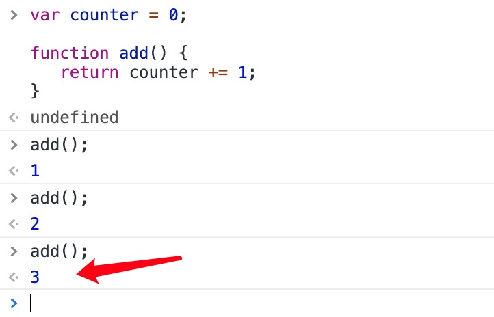
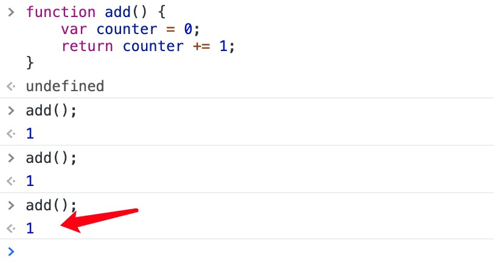

JavaScript Closures
JavaScript variables can be local variables or global variables.
Private variables can make use of closures.
Global Variables
A function can access variables defined inside the function, for example:
Functions can also access variables defined outside the function, for example:
In the latter example,ais aglobalvariable.
On a web page, global variables belong to the window object.
Global variables can be used by all scripts on the page.
In the first example,ais alocalvariable.
Local variables can only be used inside the function that defines them. They are not available to other functions or script code.
Even if global and local variables have the same name, they are two different variables. Modifying one does not affect the value of the other.
 |
If a variable is declared without using thevarkeyword, then it is a global variable, even if it is defined inside a function. |
|---|
Variable Lifecycle
The scope of global variables is global; that is, throughout the entire JavaScript program, global variables are everywhere.
Variables declared inside a function only work inside the function. These variables are local variables, and their scope is local; function parameters are also local, and they only work inside the function.
The Counter Dilemma
Imagine if you want to count some values, and the counter is available in all functions.
You can use a global variable, and a function increments the counter:
Examples
Try it Yourself »

The counter value changes when the add() function is executed.
But here's the problem: any script on the page can change the counter, even without calling the add() function.
If I declare the counter inside a function, the counter's value cannot be modified without calling the function:
Examples
Try it Yourself »

The above code will not output correctly; every time I call the add() function, the counter is set to 1.
JavaScript nested functions can solve this problem.
JavaScript Nested Functions
All functions can access global variables.
In fact, in JavaScript, all functions can access the scope one level above them.
JavaScript supports nested functions. Nested functions can access variables of the function one level above.
In this example, the nested functionplus()can access the parent function'scountervariables:
Examples
Try it Yourself »
If we can access theplus()function from the outside, this solves the counter dilemma.
We also need to ensurecounter = 0it is executed only once.
We need closures.
JavaScript Closures
Remember self-invoking functions? What does this function do?
Examples
Try it Yourself »
Example Analysis
The variableaddis assigned the return value of the self-invoking function.
The self-invoking function executes only once. It sets the counter to 0 and returns a function expression.
The add variable can be used as a function. The great part is that it can access the counter in the parent function's scope.
This is called JavaScriptclosures.It makes it possible for functions to have private variables.
The counter is protected by the scope of the anonymous function and can only be modified through the add method.
|
Closures are a mechanism for protecting private variables. They create a private scope when a function executes, thereby protecting internal private variables from outside interference. Intuitively, a closure is like a stack environment that is never destroyed. |
|---|
Mid
279***549@qq.com
Let me summarize JavaScript closures according to my understanding:
A closure is when a function references another function's variables. Because the variables are referenced, they are not garbage collected, so it can be used to encapsulate a private variable. This is both an advantage and a disadvantage; unnecessary closures only increase memory consumption.
Or, a closure is when a child function can use the parent function's local variables, as well as the parent function's parameters.
Mid
279***549@qq.com
WosLovesLife
zha***0h00@126.com
I guess many people might be confused by the last counter example, and I was too.
After verifying with code, I found the secret lies in:
var add = (function () { var counter = 0; return function () {return counter += 1;} })();Note: Why didn't the above code directly write function add (){...} instead of assigning the function to the variable add?
We often take it for granted that each call to add() will re-execute the code block in add(), but that is not the case.
Note the return in the add method; it does not return a value like 1, 2, 3, but rather returns a method and assigns that method to the add variable.
So after this function self-executes once, what is actually assigned to add in the end is the code return counter += 1.
Therefore, every subsequent call to add() is actually invoking return counter += 1.
Combined with what the article said earlier, closures hold the parent method's local variables and do not get destroyed along with the parent method, so this counter actually comes from the variable created when the function executed for the first time.
I wrote a demo as follows
var tempFunc; var add = (function () { var counter = 0; tempFunc = function () { return counter += 1; } return tempFunc })(); function myFunction() { console.log("add === tempFunc : " + (add === tempFunc)) document.getElementById("addOneS").innerHTML = add(); }WosLovesLife
zha***0h00@126.com
Zhang Yudong
166***9846@qq.com
To understand closures, you can break down the above code as follows:
function outerFunction() { var counter = 0; function innerFunction(){ return counter += 1; } return innerFunction; /* 注意 typeof innerFunction 是：function；而typeof innerFunction（）是number； */ } var add = outerFunction(); /* 调用 outerFunction()返回的是内部函数innerFucntion,那么调用几次add()将调用几次 内部函数inner Function，内部函数公用了counter，所以能够计数,所以说闭包就是将内部嵌套函数变成外部可调用的。 */ add(); add(); add();Zhang Yudong
166***9846@qq.com
MRL
lwq***@163.com
Closures provide a way to access the local variables inside another function from the outside.
var add = (function(){ var count = 0;//外部访问的计数器，局部变量. var fun = function(){ return ++count; } return fun; })(); //还可以这样写 var add2 = (function(){ var count = 0;//外部访问的计数器，局部变量. function plus(){ return ++count; } return plus; })(); //还可以这样写 var add3 = (function(){ var count = 0;//外部访问的计数器，局部变量. return function(){ return ++count; } })();MRL
lwq***@163.com
Wind Wing
kof***dj@aliyun.com
Closures are just a bug. I believe the author of JavaScript never expected users to use it this way.
Closures actually exploit the fact that when a variable exits its scope, it is not destroyed immediately, and its value remains. If there is a variable with the same name later, that data will be reused. You will find that the variable with the same name you use later has an initial value. The following example shows the problem.
<p>局部变量计数。</p> <button type="button" onclick="myFunction()">计数!</button> <p id="demo">0</p> <script> { var tmp = 2; //理论上在退出语句块后，这个变量要被释放掉的。包括内存可能被回收。但事实并非如此，会影响后面和他同名的变量 } var add = (function () { //var counter = 0; //这里注释掉.其实和上面的tmp一样的道理。这里在函数自己执行完后就应该销毁了的。 //return function () {return counter += 1;} //这里的counter已经不是上面的counter了，是一个全局变量。有初值，受上面影响，初值为0 return function () {return tmp += 1;} //这里tmp就是个全局变量。它是有初值的。为上面的2 })(); function myFunction(){ document.getElementById("demo").innerHTML = add();//3 document.getElementById("demo").innerHTML = add();//4 document.getElementById("demo").innerHTML = add(); //5 } </script>Try it Yourself »
Executing the above code makes it very clear. The counter works normally as well.
So, closures exploit a bug: variables that exit their scope are not destroyed immediately. This affects later variables with the same name.
But I don't know if later versions of JavaScript will modify this mechanism.
So writing code this way is unreliable. It relies too much on JavaScript's internal implementation.
Actually, to implement the global counter requirement, the normal approach is:
Define a global object. This object defines its own property and method add.
When using it,object.addis enough. That is the normal way.
The above way of using closures is too clever, giving a feeling of surviving in the cracks. It's not comfortable to use either.
Wind Wing
kof***dj@aliyun.com
TriumPH
870***185@qq.com
The 5th floor is absolutely right. This bug is really unpleasant to use. I wrote a bit of code for this example:
Local variable counting.
<button type="button" onclick="myFunction()">计数!</button> <p id="demo">0</p> <script> var add = new Object(); add.count = 0; add.plus = function() { this.count++; } function myFunction(){ add.plus(); document.getElementById("demo").innerHTML = add.count; } </script>Try it Yourself »
I feel that this kind of problem can be solved using normal means.
TriumPH
870***185@qq.com
Silmeria
sil***ia9@qq.com
RegardingFloors 5 and 6,point out some errors:
Floor 5:{ var tmp = 2 } In JS, a statement block cannot form an independent scope. Writing it this way is equivalent to declaring a global variable tmp = 2, so there is no situation where tmp is destroyed after the code in that block has finished executing.
Floor 6: The variable add, as well as add's count property and plus() method, are all public, which means other code can directly modify your count property, causing unnecessary trouble.
The problem that closures are meant to solve is:A function can have private variables, and the outside can access them through a closure, such as privileged methods (similar to the JavaBean style):
<script> function Student(value) { var name = value; this.getName = function() { return name; }; this.setName = function(value) {name = value; }; } <script>Silmeria
sil***ia9@qq.com
c-dev
284***590@qq.com
The examples and conclusions they gave for this are also wrong.
This technique is how JS creates "private properties" because it has no "access modifiers".
It is a clever approach that incorporates the fundamental feature of object-oriented programming languages: "encapsulation".
It is not a bug; everyone should know how to use it.
I hope it can be clearly noted alongside.
Beginners who haven't read Floor 7 will be directly misled!
I thought of a rather strange but vivid example:
A person needs to have their body examined (operating on private properties);
But you can't directly kill the person to examine them (breaking encapsulation);
An examination tool is placed inside their body to collect data (a public class accessing private properties through a closure);
After the examination, the tool is taken out to retrieve the examined data (without breaking encapsulation, using this public class to manipulate private properties and complete the task).
c-dev
284***590@qq.com
flag233
132***4037@qq.com
With comments added, it becomes easier to understand:
var add =function () { var counter = 0; window.alert("父方法"); // 只有在 add 赋值时执行一次 return function () { window.alert("子方法"); // 每次执行 add() 都会执行 return counter += 1; } // counter 作用域在父函数中, 自然在其子函数中也能使用,但因为 // 子函数还需要使用了count, 所以 count 不随着父函数一起释放。 // 利用在 function(){}() 的形式自动执行一遍父匿名函数, 赋给 add 子方法。 }(); function myFunction(){ document.getElementById("demo").innerHTML = add(); //这里add()执行的就是子方法 }Try it »
flag233
132***4037@qq.com
Dongyixia
416***884@qq.com
Part of my understanding of the above example:
var add = function () { var counter = 0; alert("父方法"); // 只有在 add 赋值时执行一次 var add_child = function(id) { var counter_res = 0; if(id === 1) { counter_res = counter + 1; } else if(id === 2) { counter++; counter_res += counter; } else { counter_res = 0; } alert("子方法"); // 每次执行 add() 都会执行 return counter_res; }; return add_child; // counter 作用域在父函数中, 自然在其子函数中也能使用,但因为 // 子函数还需要使用count, 所以 count 不随着父函数一起释放。 // 利用在 function(){}() 的形式自动执行一遍父匿名函数, 赋给 add 子方法。 }(); /* add = function(){}，是一个函数的普通定义方式， 但是 add = function(){}()，会在add定义时即执行一次function(){}， 这样做的目的是为了给function(){}中的变量赋初始值，并将add_child=function(){}这个函数返回给add这个变量。 当以后执行add()这个函数时，其实执行的是add_child=function(){}。 这样做，闭包的目的就在于，你通过add这个对象访问不到counter这个变量，无形中创造了一个私有变量。 */ add(1); add(2); add(2);Try it »
Execution result:
Dongyixia
416***884@qq.com
Dennis
yif***chaoran@163.com
Floor 5：{ var tmp = 2 }In JS, a statement block cannot form an independent scope. Writing it this way is equivalent to declaring a global variable tmp = 2, so there is no situation where tmp is destroyed after the code in that block has finished executing.
Floor 6：The variable add, as well as add's count property and plus() method, are all public, which means other code can directly modify your count property, causing unnecessary trouble.
The problem that closures are meant to solve is: a function can have private variables, and the outside can access them through a closure, such as privileged methods (similar to the JavaBean style).
In response to the above statements, I need to refute them.
Floor 6: The variable add, as well as add's count property and plus() method, are all public, which means other code can directly modify your count property, causing unnecessary trouble.
This statement itself has a problem. Floor 6 uses `new` to construct an object, and then assigns properties and methods to the object. Later, you can simply call `object.method()` via onclick. It is true that the so-called methods are public, but you should know that even if they are public, they must be accessed or modified through this object; it's not that they can be modified directly.
Additionally:
<script> function Student(value) { var name = value; this.getName = function() { return name; }; this.setName = function(value) {name = value; }; } <script>Doesn't the above code look like declaring an object? And in order to use the so-called function closure, you have to use the `this` keyword, and at the end you still need to use `new` to construct a `Student`. Moreover, to ensure that the function's private variable `name` can be assigned, you have to pass a function variable to it. It's really awkward to use, and this method seems to be accessible globally through `Student`, right?
<script> function Student(value) { var name = value; this.getName = function() { return name; }; this.setName = function(value) {name = value; }; } myStu=new Student("name"); //我是不是可以在script内任意一个地方通过myStu.setName("name")来修改name值？ <script>So, the core requirement is actually this: I can have a local variable, but its lifetime must be global-like, and it needs to be distinguished from global variables. Then just directly use an object—declare an object and define a property value on it. That property value variable must naturally be accessed through the object, which already achieves restricting the variable to the scope of that object.
At this point, why make an unnecessary move and insist on using so-called closures? Furthermore, don't you think that defining a function as a method of an object is itself already a closure? Why must it be achieved with `function`?
Dennis
yif***chaoran@163.com
jordan chen
che***2890@gmail.com
Having read the discussion above, I would also like to share some of my own views.
Regarding the first debate—whether the existence and use of closures are reasonable and necessary—I think the answer is "YES!".
My personal view is: using closures as an implementation method to access private properties in an object is more in line with the logical thinking of object-oriented programming and the development trend of modern programming.
For example: if we set the `count` value in the counter object as a public property, we can indeed solve the same problem without using closures. But if we take a longer view, the counter `function` may be just a small feature in the entire codebase. Apart from this feature, there will be similar functional modules, such as an average-calculating `function`, a mixed-statistics `function`, and so on. Should we then set all the key properties of the other functions as global properties just so that `Window` can call them directly?
If everything is set as global properties, wouldn't the code be degenerating? The encapsulation of objects becomes more and more imperfect, moving closer to the procedural programming philosophy. At the same time, it will make future modifications and updates much more inconvenient.
As for the object-oriented programming mindset—what it is and what its benefits are—I think I don't need to elaborate more here.
A good object-oriented program is one that achieves complete encapsulation and provides interfaces for accessing internal data.
If we want to modify the counter functionality in the future, we only need to modify its internal properties. There is no need to consider adjusting global variables, because the global implementation is still done through closure functions.
Finally, let me describe closure functions with an example:
You go to a restaurant to eat. The dining hall area is equivalent to the global area (public), and the closure function is like a waiter. If you want to order, just find the waiter.
Without a waiter, how would you know what dishes the kitchen makes? Moreover, the kitchen is an area where unrelated people are not allowed (the kitchen corresponds to the inside of a function; you cannot access it from the outside and are simply not allowed in).
Then the kitchen would have to put all the dishes that should only be kept in the kitchen out in the open for you to see (turning the internal property `count` into a global property). Such a restaurant would definitely be a mess and could not be considered presentable.
But with a waiter, you can learn what the kitchen offers through the waiter and complete your order. The waiter (closure function) enables the outside to directly access properties inside the function.
jordan chen
che***2890@gmail.com
MCCF
353***4841@qq.com
A closure isan interface for accessing private properties.As a programmer who has always been learning C++, I was immediately moved to tears upon seeing this.
Well, seeing the heated debate here, I would like to make one point:Closures are necessary for implementing object-oriented programming.。
Actually, Floor 11 completely failed to understand closures, and even failed to understand the meaning of object-oriented programming. The fundamental elements of object-oriented programming areencapsulation: Perhaps we need `private` variables, that is, properties that cannot be changed directly but only through methods. As for the so-called "objects can replace closures," the true meaning of closures should actually be used in object constructors.
For example, we want an object to have a property that can only be increased, not decreased, and each time it can only be increased by adding some even number via the `add` function. This is where closures show their usefulness. This example can be said to uniformly solve all the problems raised above.
function NumPro(val){ var counter=val; this.add=function(num){ if(num%2==0) counter+=num; } this.num=function(){ return counter; } } //alert(counter); //报错 alert(NumPro.counter); //输出undefined(显而易见的) var a=new NumPro(0); alert(a.counter); //输出undefined(不在this中) alert(a.num()); //输出0 a.add(2); alert(a.num()); //输出2 a.add(1); alert(a.num()); //输出2(仅允许偶数) a.add(10); alert(a.num()); //输出12 var b=new NumPro(-2); alert(b.num()); //输出-2Obviously, closures are not merely because "variables in a scope are not destroyed"—directly outputting the variable will cause an error, and you cannot access the property through the function name; the values output from two objects have nothing to do with each other. At the same time, closures can restrict direct manipulation of properties—variables not in `this` cannot be accessed from the outside.
Therefore, closures are designed intentionally, not a bug. In fact, if you have used Java or other object-oriented languages, you will feel deeply—Javascript's object-oriented features are often surprising (it doesn't even have `Class`). But this does not mean it cannot achieve the `private` effect found in other languages. From this perspective, the closure here is simply changing `this.counter = num` to `var counter = num`.
Of course, closures are not entirely like this—for example, in the article, returning a function(name)is a clever method. However, closures mean that private variables in a function are not destroyed immediately and can be accessed by nested functions. That is enough.
In addition, experiments have shown that a function can access not only private variables of the immediate outer function—variables of the parent function's parent function, and even higher-level functions, can also be accessed (though this is not recommended... it often only reduces code readability). However, if you use:
NumPro.prototype.numEx=function(){ return counter; }If `counter` is defined inside the `NumPro` function, calling this function will result in an error (its prototype function obviously does not contain the `counter` variable, and even if it did, it would be unclear how to handle it).
MCCF
353***4841@qq.com
elize
239***0360@qq.com
The article saidself-invoking function.That is,
var para = (function(){ alert(1); })(); //定义时已经执行一次，打印原文中的add()会发现alert(1)只会出现一次Similarly, there are also:
+/~/-/!function(){ alert(2); }(); ;(function defend(){ alert(3); }());add is actually running with the content declared in the sub-function: So what add receives is the inner sub-function (aliased as f2, with the content as follows), not the counter++ expression. In practice, it doesn't matter whether it returns or not, and the article executed add() three times consecutively; only functions can be executed with (), so counter++ is just logic;
//原文示例： var add = (function () { var counter = 0; return function () { return counter += 1; } })(); add(); add(); add(); //子闭包内容 var f2 = function(){ //这个声明内容被实际赋值给add counter ++; //return counter++; //有人说返回的是counter++，实际不用return结果依旧成立，送已不是表达式被赋值 }counter always exists: var add indicates that add is aglobal variable, and it won't be destroyed for no reason. When add() is executed, it is f2() that is executed. This causes f2 to also be kept in memory, so the parent function it depends on and its variables cannot be destroyed. Each run updates the value of counter.
f2 can access the parent-level variables: The variable counter of the sub-function f2 is defined in the parent function (executed only once). If the variable is not found internally, it will search in the outer scope. This search process is called the scope chain (if the outer scope doesn't find it, it continues to search the scope of higher-level objects). As the original text said, it supports nesting and supports access to the function variables of the upper layer.
f2 is assigned to add; accessing its own scope and that of its parents is the process of calling internal variables from the outside.
elize
239***0360@qq.com
Desire Black Hole
125***6614@qq.com
After ES6 introduced the let keyword, I feel closures can be implemented in the following way:
{ let counter=0; function fun(){ document.getElementById("demo").innerHTML=(counter+=1); } }This way, functions outside the code block cannot call counter, and fun() can also call counter=0 only once.
Desire Black Hole
125***6614@qq.com